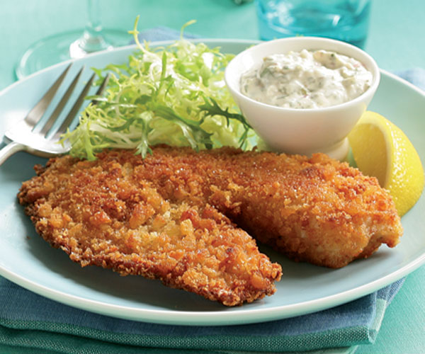

<DOCTYPE! html>
<html>
	<head>
		<title>Nick's Cookbook</title>
		<link href="../CSS style.css" type="text/css" rel="stylesheet" />
	</head>
	<body>
		<h1><center>Nick's Cookbook</center></h1>
		<h2>Italian Style Tilapia</h2>
		<p>Step 4: Cook in a 450 degree oven for 10-20 minutes, or until the fish flakes easily. Enjoy!</p>
		<br />
		<a href="sea23.html">Step 3</a><br /><br />
		<a href="../../homepage.html">Homepage</a><br />
		<a href="../seahome.html">Seafood Entrees</a><br />
		<a href="sea2home.html">Main page of Italian Style Tilapia</a>
	</body>
</html>